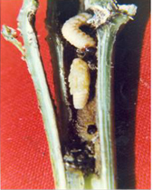

| Home |
| COTTON |
| 1. Leafhopper |
| 2. Cotton Aphid |
| 3. Thrips |
| 4. Whitefly |
| 5. Mealy Bug |
| 6. Red Cotton Bug |
| 7. Dusky Cotton Bug |
| 8. Tobacco Cutworm |
| 9. Leaf Roller |
| 10. Semiloopers |
| 11. Stem Weevil |
| 12. Shoot Weevil |
| 13. Surface Weevil |
| 14. Black Scale |
| 15. White Scale |
| 16. Yellow Stem Scale |
| Questions |
| Download Notes |
PESTS OF COTTON :: Minor Pests :: Stem Weevil
11. Stem weevil: Pempherulus affinis (Curculionidae: Coleoptera)
Distribution and status: India, Burma, Thailand and Philippines; Minor but assumes a key pest status in South India.
Host range: Cotton, bhendi, jute, Abutilon indicum, Hibiscus rosasinensis, Hibiscus cannabinus and other malvaceous and tiliaceous plants.Cotton is the most preferred host.
Damage symptoms: The damage to cotton starts when plants are young and are about three weeks old. The grubs bite into the region between the bark and the main stem, resulting in swellings on the stem just above the ground level. Young plants are invariably killed on account of the attack of the pest and the older plants that survive, lack vigour and strength, and when strong winds blow, these plants break at the nodes.
 |
Bionomics: Adult: very small weevil measuring 1/8”; dark in colour with two small white patches on the elytra. It lays globular or oval shaped eggs singly in the cavities scrapped out by the weevil at the nodal region of the plants. A female weevil lays an average of 50 eggs with a maximum of 121 eggs. The egg period is 6-10 days. Grub: white, apodous. The grub feeds on stem tissues internally. The larval period lasts 35-37 days. It pupates in pupal chamber. The adult may live for 25 - 30 days.
Management
- Remove the infested plants and destroy.
- Use resistant variety MCU 3 in endemic areas.
- Apply carbofuran 3G at 10 kg/ha on 20 days after sowing and earthup.
- Apply farm yard manure at 25 t or 250 kg of neem cake/ha.